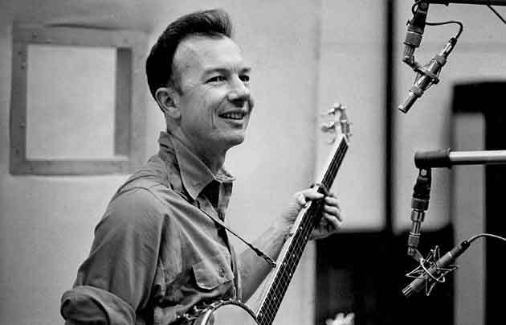
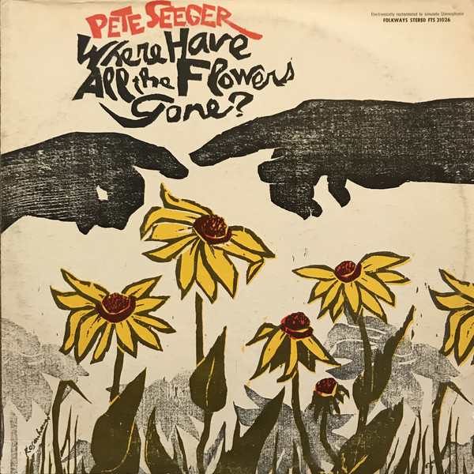
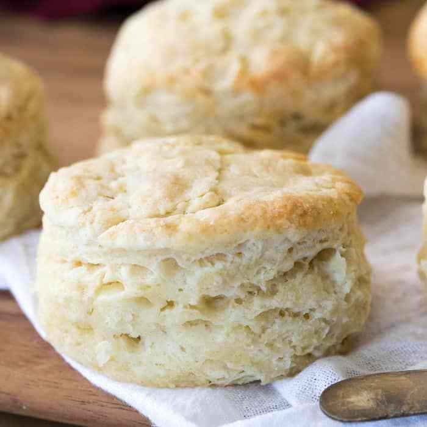
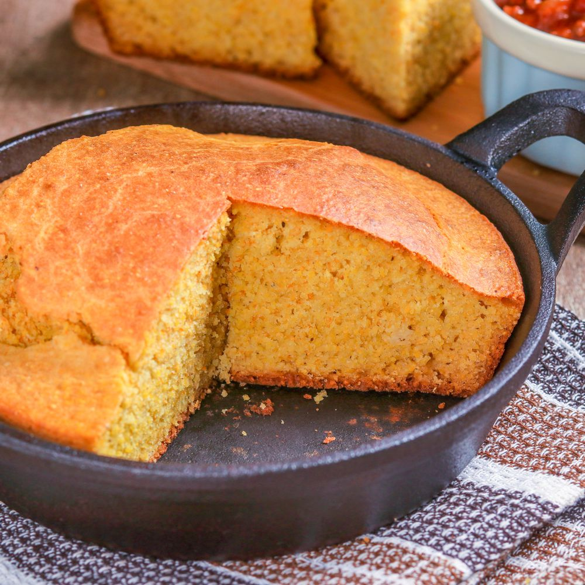

노동과 육아 - 볼보 광고에 나온 "Hard Times in the Mill" 가사 해설
게시: 2020-11-05T06:30:26+09:00
새로 나온 볼보 자동차의 TV 광고를 봤습니다. 차선 유지나 후방 위험 감지 등을 위한 자동 안전 장치를 강조하는 내용이에요. 재미있었던 부분은 이 광고에 사용된 음악이었습니다. 제목은 "Hard Times in the Mill"이고 작사가는 무명씨입니다. 미국의 공업화 시기에 면직 공장(cotton mill)에서 고된 노동에 시달리던 노동자들 사이에서 불리던 일종의 포크송입니다. 이 노래에는 여러가지 가사 버전이 있고, 또 여러 가수들이 레코드로 취입했는데, 이 광고에 삽입된 것은 그 중 가장 유명한 피트 시거(Pete Seeger)의 1950년대 버전입니다. 피트 시거는 당시 밥 딜런이나 존 바에즈 같은 포크송 가수들이 흔히 그랬듯이 사회성 있는 노래를 많이 불렀고 또 실제로 노동 운동과 인권 운동, 반전 운동 등의 사회 활동을 많이 했습니다. 덕분에 매카시즘의 박해를 받기도 했고요.

(여기서 소개하는 Hard times in the mill도 그렇지만 기타 외에도 밴조를 이용한 음악을 많이 했습니다.)

(피트 시거는 "Where have all the flowers gone"이라는 명작 반전 노래를 만들기도 했습니다. 그 외에 그룹 Birds가 부른 버전이 더 유명한 "Turn, turn, turn"의 작사작곡도 피트 시거가 했습니다.)
이 노래가 자동차 광고에 쓰인 것은 19세기 말의 살인적인 고된 공장 노동 못지 않게 현대인을 고달프게 하는 것이 바로 육아이기 때문입니다. 이 광고의 주인공은 돌도 안 된 듯한 아기를 키우며 집안에 도사리는 온갖 위험으로부터 아기(특히 여기서는 쌍동이!)를 지키느라 고생하는 젊은 부부거든요. 아래 링크를 건 광고 클립은 후진하던 부부를 지켜주는 후방 감지 장치를 보여줍니다만,, 다른 버전에는 밤새도록 아기를 돌보느라 잠이 부족한 여성이 운전을 하다가 조는 위험천만한 순간을 보여줍니다. 물론 인공지능에 의한 차선 유지 장치가 여성을 구해주지요. 저도 애 키워본 사람으로서, 솔까말 남자들이 밖에 나가 일을 하는 것은 애 키우는 것에 비하면 그냥 놀고 즐기는 것 같더군요. 우리 와이프도 (그때는 육아휴직이 2개월에 불과했는데) 육아휴직 마치고 직장 복귀할 때 너무너무 좋더랍니다. 저도 기억나는 것이 밤에 빽빽 울며 보채는 아이를 앉고 아파트 복도에 나와 걸어다니다가 건너편 아파트 어느 거실에서 강아지와 놀고 있는 어떤 아저씨를 보고 '아, 그냥 개나 키우는 건데' 라고 후회했던 것이 기억납니다. 특히 초반 3개월은 정말 너무 힘들었고, 1년까지는 아주 힘들었으며, 3년까지도 힘들었는데, 그 이후 애가 만 3살에서 한 10살까지 7~8년 동안 일평생 할 수 있는 효도는 다 한 것 같습니다. 흔히 애를 키워보면 부모님께 효도해야 한다는 생각이 든다고 하던데, 저는 반대로 효도할 필요가 없구나 하는 생각이 들었어요. 애가 할 수 있는 효도는 3세~10세 그 때의 귀여움으로 이미 다 했으니까요. 그 이후 혹시 여러분 자녀가 여러분의 속을 썩인다면, 그건 애가 어릴 때 부모가 누렸던 즐거움에 대한 대가를 치루는 거라고 생각하시는 것이 모두에게 좋습니다. 이 노래 속 노동자는 아마 공장 기숙사 같은 곳에서 사는지, 새벽 4시반에 요리사들이 쿵쿵 거리며 돌아다는 소음이 들리는 것부터 시작합니다. 그런데 (광고 속에서는 편집되어 나오지 않지만) 원래 이 노래의 가사 속에서는 6시에 주어지는 아침 식사로 "Two cold biscuits, hard as a rock", 즉 돌덩이처럼 단단한 차가운 비스킷 두 조각이 나옵니다. 해군도 아닌데 왜 비스킷, 즉 건빵(hardtack)이 나오는지 의아하실텐데, 아마 여기서 말하는 비스킷은 크래커나 건빵이 아니라 미국 남부에서 주로 먹는, 우리나라에서는 KFC나 (지금은 철수한) 파파이스에서 나오는 부드러운 미국식 소프트 비스킷을 이야기하는 것일 겁니다. 그런 소프트 비스킷이 빵(bread 또는 roll, loaf)이 아니라 biscuit이라고 불리는 이유는 발효 내지는 부풀리기 과정(leavening)이 빵과는 다르기 때문입니다. 빵은 효모(yeast)를 써서 몇 시간 동안 발효시키지만, 소프트 비스킷은 과자처럼 그냥 베이킹 파우더를 써서 반죽하자마자 굽거든요. 베이킹 파우더가 가열되면서 나오는 가스에 의해 오븐 속에서 비스킷이 부풀게 됩니다. 왜 이렇게 하냐고요? 발효 과정이 없으니 빨리 구울 수 있기 때문입니다. 그러면 최소한 아침에 따뜻하고 부드러운 비스킷을 먹을 수 있어야 할텐데 나온 건 차갑게 굳어버린 비스킷이네요. 아마 전날 먹다 남은 것을 주나 봅니다.

(미국에서 비스킷이라고 하면 이걸 이야기하고, 영국에서 비스킷이라고 하면 크래커 같은 것을 이야기합니다.)

(콘브레드입니다. 전형적인 남부 음식입니다만 남북전쟁을 통해서 전국적으로 많이 퍼졌다고 합니다.)
심지어 저녁에 먹는 것도 옥수수빵(cornbread)입니다. 콘브레드도 소프트 비스킷처럼 주로 미국 남부에서 먹는 음식아고, 역시 비스킷처럼 이스트 대신 베이킹파우더를 씁니다. 콘브레드에는 허쉬퍼피(hushpuppies)나 쟈니케익(Johnnycakes) 같은 여러가지 종류가 있습니다만 특히 corn pone이라고 하는 것은 주로 시골뜨기를 지칭하는 단어로 사용되기도 합니다. 아무래도 미국 남부의 농업지대에서 많이 먹는 음식이다보니 그런 뜻으로 사용되는 모양이에요. 옥수수빵과 함께 이 노동자가 저녁으로 먹게 되는 고기는 턱뼈입니다. 소인지 양인지는 나오지 않습니다만, 고기 부위 중에서 머릿고기는 당연히 싸구려 부분입니다. 구약성경 신명기 18장 3절에 하나님께 바치는 제물의 처분에 있어 제사장에게는 앞다리와 턱과 위를 주라고 되어 있지요. 다 비교적 맛없고 값이 싼 부위입니다. 제사장은 원래 재산이 없기 때문에 유대인들이 바치는 제물의 일부를 받아 연명을 해야 하는데, 그런 맛없는 부위만 받게 되어 있습니다. 우리나라 개신교 목사님들이 싫어하실 것 같은 성경 구절이네요. 신18:1 제사장을 포함한 레위 지파는 이스라엘 땅에서 분배받을 땅이나 재산 이 없으므로 백성들이 여호와께 바치는 제물과 예물을 먹고 살게 될 것입니다. 신18:2 그들이 다른 지파와는 달리 땅을 분배받지 않는 것은 여호와께서 그들에게 약속하신 대로 여호와 자신이 그들의 재산이 되시기 때문입니다. 신18:3 여호와께 바쳐진 제물이 소든 양이든 그 앞다리와 턱과 위는 제사장의 몫입니다. "Hard Times in the Mill"이 흘러나오는 볼보 자동차의 광고는 아래 유투브에서 보세요. (협찬 받았으면 좋겠는데 협찬은 아닙니다.) 가사는 전체의 긴 가사를 다 적지 않았고, 이 광고에서 나오는 부분만 적었습니다.

Every morning at half-past four, You hear the cooks hop on the floor. It’s hard times in the mill, my love, Hard times in the mill. 매일 새벽 4시반 요리사들이 쿵쿵거리는 소리가 들려요 공장에서는 고생을 해요, 내 사랑 공장에서는 고생을 해요 Every mornin' right at six Don't that ol' bell make you sick Hard times in the mill my love Hard times in the mill 매일 아침 6시 저 벨 소리가 지긋지긋하지 않나요 공장에서는 고생을 해요, 내 사랑 공장에서는 고생을 해요 The section hand, standin' at the door Ordering the sweepers to sweep up the floor It's hard times in the mill my love Hard times in the mill 작업반장이 문 옆에 서서 청소부들에게 바닥을 쓸라고 하네요 공장에서는 고생을 해요, 내 사랑 공장에서는 고생을 해요 An' every night when I go home A piece o' cornbread an' an ol' jawbone It's hard times in the mill my love Hard times in the mill 매일 밤 집에 오면 옥수수빵 한조각에 턱뼈 뿐이네 공장에서는 고생을 해요, 내 사랑 공장에서는 고생을 해요